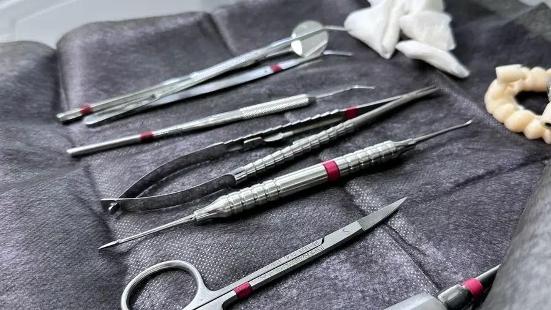
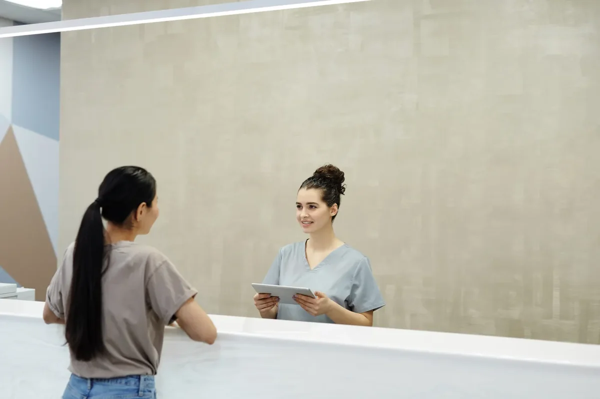
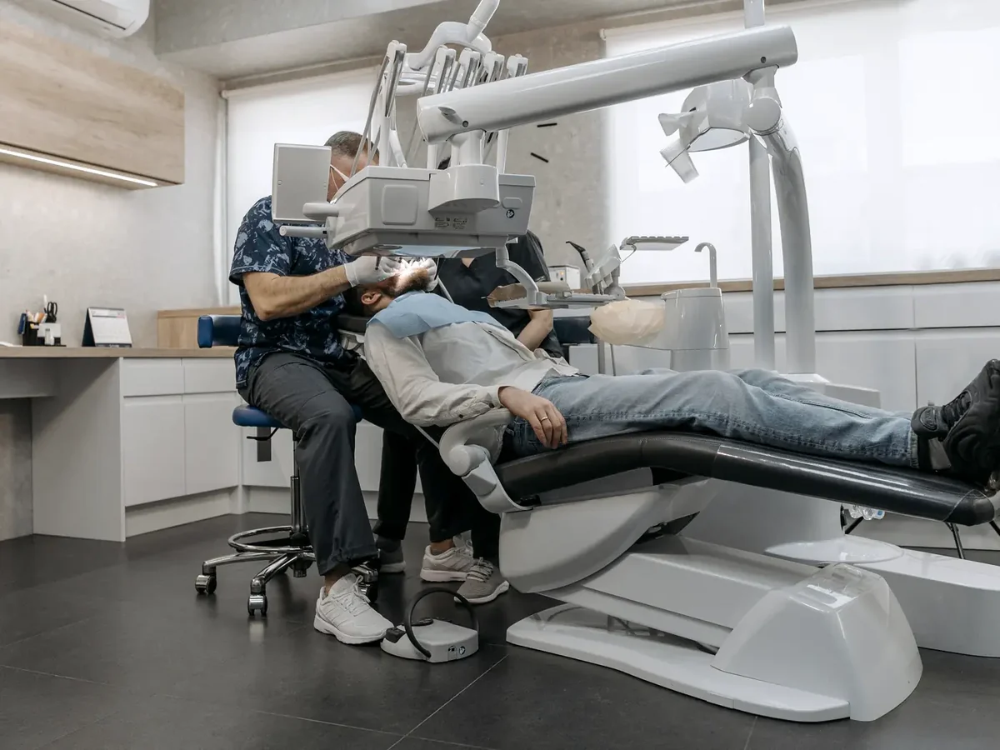
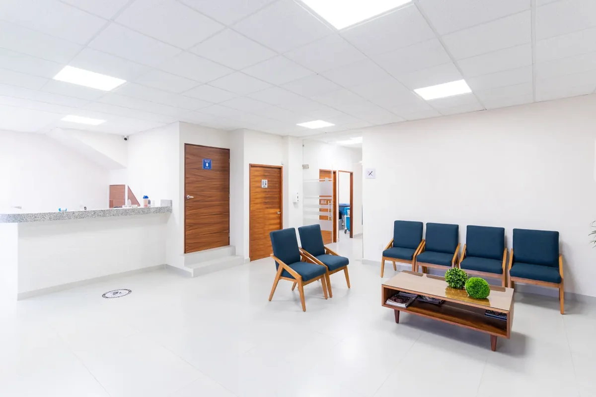
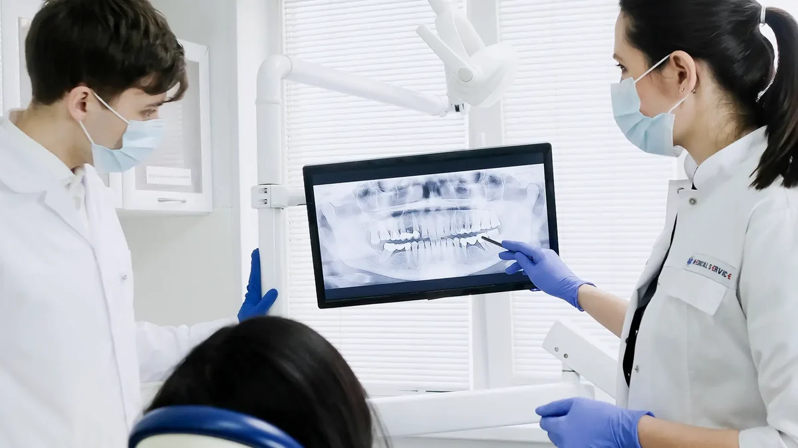

Після огляду
План лікування
План допомагає зрозуміти послідовність процедур і витрати. Уточніть, що входить у кошторис, скільки візитів може знадобитися та за яких умов план може змінитися.
Зрозумілий план лікування починається з розмови: що турбує, які є варіанти та як підготуватися до прийому.
На консультації обговорюють скарги, попереднє лікування та очікування. Після огляду лікар пояснює стан зубів і можливі наступні кроки.
Запитайте про альтернативи, ризики та вартість кожного етапу, перш ніж ухвалювати рішення.
Ілюстративна фотодобірка сучасної стоматології




СПІЛКУВАННЯ З ЛІКАРЕМ
Що потребує лікування зараз? Які є альтернативи? Попросіть стоматолога пояснити етапи, можливі відчуття та рекомендації після процедури.
У розділі команди можна переглянути приклади профілів за напрямами стоматології.
Переглянути профілі
Після огляду
План допомагає зрозуміти послідовність процедур і витрати. Уточніть, що входить у кошторис, скільки візитів може знадобитися та за яких умов план може змінитися.
Перед прийомом
Підготуйте запитання, перелік ліків і наявні знімки. Якщо потрібні особливі умови доступності або більше часу на прийом, уточніть це заздалегідь.
Контакти та записЗалиште заявку, щоб узгодити деталі майбутнього візиту.